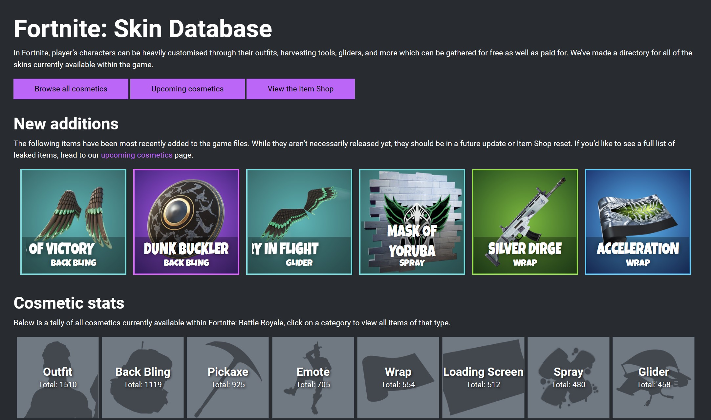
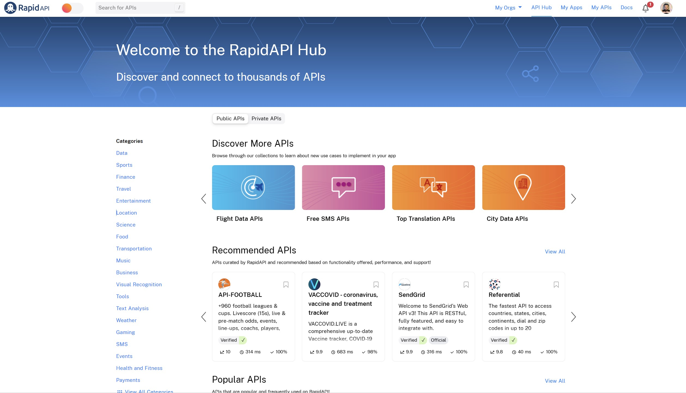
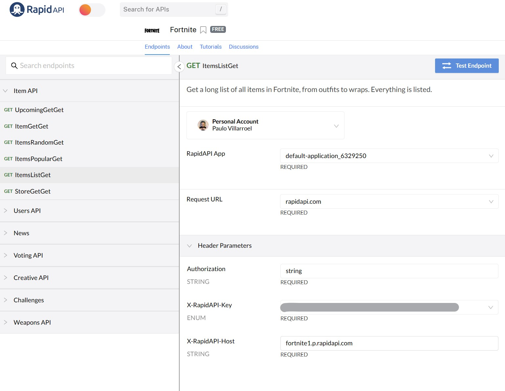
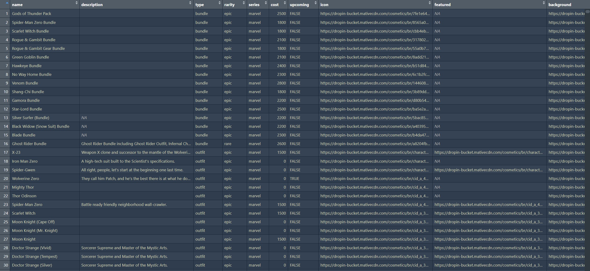

library(httr)
url <- "https://fortnite1.p.rapidapi.com/items/list"
response <- VERB("GET", url, add_headers(
"Authorization" = "string",
"X-RapidAPI-Key" = "xxxxxxxxxxxxxxxxxxxxxxxxxxxxxxxxx",
"X-RapidAPI-Host" = "fortnite1.p.rapidapi.com"),
content_type("application/octet-stream"))
content(response, "text")Hola nuevamente!!!
Si es primera vez que estás por acá, espero que este contenido te sea interesante y logre desquearte alguna idea. Si ya me conoces, te agradezco estar por acá otra vez.
El post de hoy es medio off-topic de las temáticas que habitualmente hablo en el blog, pero me parece que es puede llegar a ser de interés para muchas personas. Habitualmente mezclo cosas de distintas temáticas, algo como la medicina traslacional jajaja 😅
Te cuento…
Mi hijo mayor es un entusiasta del diseño gráfico y a los videojuegos, como buen pre-adolescente. La cosa es la semana pasada me dijo que habia encontrado una web en donde hay muchas skins y gráficas de Fortnite. Se supone que ahí estan todas las imágenes de los personajes, las armas, gliders y esas cosas del juego.

Como le gusta diseñar con Photoshop, se descarga las imágenes que le gustan, las edita y haces alguno diseños con ellas. El tema es que para descargarlas, hay que navegar por una serie de menús y hacer varios clics para tener la imagen en una buena resolución, para luego descargarla.
Lo que me preguntó fue que si había una forma de descargar todas las imágenes del sitio de forma masiva, pero las de buena calidad, ya que hacerlo de a una era muy lento.
Ok… pues tenemos nuestro problema a resolver!!!
Ah!! De ahora en adelante, nombraré a mi hijo como mi cliente.
El problema
En programación partimos desde un problema que es necesario resolver. Bueno, hay un paso clave acá que es el de comprender profundamente el problema de modo de buscar las mejores alternativas de solución, que incluso, pueden no ser de programación como tal. Ahora, si este fuera un caso de Ciencia de Datos, igual hay un paso previo que es el de análisis de factibilidad, pero de eso no te voy a hablar ahora. Ya lo veremos en una próxima oportunidad.
Pues bien, veamos el problema un poco más en detalle…
La idea es poder disponer de todas las imágenes de Fortnite en buena calidad para poder realizar diseños. El tema, es que descargarlas manualmente desde la web es una tarea muy tediosa y lenta. Además, que la cantidad de imágenes son bastantes.
Posibles soluciones
Como me había mostrado la web, lo primero que se me pasó por la mente fue hacer un scraper para descargar las imágenes. Estuve indagando esta opción, pero la deseché al poco tiempo. Los motivos fueron que algunas imágenes no erán de buena calidad (la gran mayoría si lo era, en todo caso). Además, las rutas en algunos casos eran extrañas y algunos botones para acceder a las secciones tenían bastante variabilidad. Todas esas cosas hacía que codificar el scraper sea más complejo. Posiblemente lo habría resuelto con algunos días de trabajo, pero tenía un requerimiento del cliente explícito: necesitaba las imágenes antes de las 14hrs. ¿Por qué? No tengo idea jajaja
Pero bueno, fue así. Tenía un par de horas, entonces.
Como pensé que en el scraper me tomaría más tiempo del disponible, indagué otras opciones.
Fortnite es un juego ultra conocido. Mi pensamiento era buscar otra web similar e intentar el scraper, pero mi cliente no deseaba otra web.
En la búsqueda de webs me surgió la duda… Bueno, y esta gente, ¿De dónde saca las imágenes? Porque de algún lado las sacan, no? No creo que se scrapeen mutuamente. Además, que son cientos o miles de imágenes y que constantemente se están actualizando. Esa labor no se hace de forma manual.
Entonces, pensé que debía haber un repositorio central con todas las imágenes y que los desarrolladores sacaban desde ahí sus datos. Lo clásico en estos casos es usar una API (Application Programming Interface, o Interfaz de Programación de Aplicaciones en español).
Te comento que estoy desarrollando una serie de artículos para enseñar qué son las API y cómo consumirlas. Puedes leer este otro artículo en donde explico desde cero qué son las API. A modo de ultra resumen, una API podemos entenderlas como la forma en que 2 sistemas informáticos se comunican para lo cual usan una serie de protocolos y estandarizaciones de modo que se puedan entender. Entonces, una parte hace una solicitud y la otra (el servidor) responde con algunos determinados datos. Si no sabes mucho del tema, igaual te aconsejo que te leas ese artículo primero y lueg vuleve a éste, para que te quede todo más claro.
En este caso, me puse a buscar alguna API de Fortnite que estuviera disponible.
Hay una web que me gusta bastante y que suelo usar, pues tiene cientos de API y es bastante ordenada. Se llama Rapid API.

Bueno, investigando la web de Rapid API encontré varias de Fortnite.
Me llamó la atención una de ellas, pues es bastante completa, tiene baja latencia, buena disponibilidad y es gratis.
Estuve viendo la API junto a mi cliente y le pareció una buena idea.
Pues bien! Ahora vamos a programar un poco para implementar el consumo de la API.
La solución
El lenguaje que usaré es R, pues es el que más controlo.
Para poder usar la API hay que suscribirse a ella. Esto te genera un token para que puedas interectuar y autentizarte en ella. Bueno, la API solo permite aplicar métodos GET. En todo caso, eso me da igual, pues es justamente lo que necesitamos. Así que todo bien.

La API tiene varios endpoints. Los endpoint de un API son puntos finales o direcciones en un servidor que pueden ser accedidos a través de la red (como Internet) para recibir o enviar datos. Un API puede tener múltiples endpoint, y cada uno de ellos puede realizar una función específica, como obtener datos de una base de datos, enviar un correo electrónico, o realizar una acción en un sistema externo.
En resumen, los endpoint de un API son puntos de acceso a los servicios y funcionalidades que ofrece una aplicación o sistema a través de la red. Para nuestro caso, la API nos ofrece varias opciones. Entre ellas hay una que nos pareció interesante y es que nos permite acceder a un listado con todos los skins y elementos de los personajes. A primera vista parece ser lo que necesitamos. Pero es necesario darle una vista un poco más en detalle.
Entonces, veamos cómo pedir esos datos y ver qué nos da…
Para implementar el método GET en R, podemos usar este código:
En Python, podemos hacerlo de la siguiente forma:
import requests
url = "https://fortnite1.p.rapidapi.com/items/list"
headers = {
"Authorization": "string",
"X-RapidAPI-Key": "xxxxxxxxxxxxxxxxxxxxxxxxxxxxxxxxx",
"X-RapidAPI-Host": "fortnite1.p.rapidapi.com"
}
response = requests.request("GET", url, headers=headers)
print(response.text)He reemplazo la API-key por XXXXXXX lógicamente por temas de seguridad. Ese dato es único para cada persona que se suscriba a a API, asi que reemplázalo por el que te corresponda.
La respuesta del servidor es un JSON.
El JSON (JavaScript Object Notation) es un formato de texto utilizado para representar datos estructurados. Es muy común en el desarrollo de aplicaciones y se utiliza para intercambiar datos a través de la red (como Internet).
Un archivo o texto JSON se compone de pares de clave-valor, que se encierran entre llaves {}. Cada par de clave-valor se separa con una coma. Las claves son cadenas de texto (encerradas entre comillas) y los valores pueden ser de diferentes tipos, como números, cadenas de texto, o incluso otros objetos JSON anidados.
Aquí hay un ejemplo de cómo se vería un objeto JSON:
{
"nombre": "Juan",
"edad": 30,
"dirección": {
"calle": "Calle Falsa",
"ciudad": "Ciudad Falsa",
"país": "País Falso"
},
"intereses": ["lectura", "deportes", "viajes"]
}En este ejemplo, tenemos un objeto JSON con cuatro pares de clave-valor: “nombre”, “edad”, “dirección” y “intereses”. El valor de “nombre” es una cadena de texto, el valor de “edad” es un número, el valor de “dirección” es otro objeto JSON anidado y el valor de “intereses” es una lista de cadenas de texto.
JSON es muy utilizado en el desarrollo de aplicaciones porque es un formato sencillo y fácil de leer tanto para personas como para máquinas. Además, es ampliamente compatible con diferentes lenguajes de programación y plataformas.
Ok… ya con eso explicado a grandes rasgos, veamos que nos da nuestra API de Fortnite:
> content(response, "text")
[1] "{\"lastUpdate\":0,\"lanuage\":\"en\",\"data\":[{\"itemId\":\"7fe1e64e-fc28-4a2c-bb1e-d5711a04fb16\",\"lastUpdate\":1668185110,\"item\":{\"name\":\"Gods of Thunder Pack\",\"description\":\"\",\"type\":\"bundle\",\"rarity\":\"epic\",\"series\":\"marvel\",\"cost\":2500,\"upcoming\":false,\"images\":{\"icon\":\"https://dropin-bucket.mativecdn.com/cosmetics/br/7fe1e64e-fc28-4a2c-bb1e-d5711a04fb16_l5bp7gje/icon.png\",\"featured\":null,\"background\":\"https://dropin-bucket.mativecdn.com/cosmetics/br/7fe1e64e-fc28-4a2c-bb1e-d5711a04fb16_l5bp7gje/icon.png\",\"information\":\"https://dropin-bucket.mativecdn.com/cosmetics/br/7fe1e64e-fc28-4a2c-bb1e-d5711a04fb16_l5bp7gje/icon.png\"},\"backpack\":{},\"obtained\":\"2500\",\"obtained_type\":\"vbucks\",\"ratings\":{\"avgStars\":3.68,\"totalPoints\":2228,\"numberVotes\":606},\"costmeticId\":\"7fe1e64e-fc28-4a2c-bb1e-d5711a04fb16_l5bp7gje\".....Qué es eso!!! 😖
Recorté la respuesta, porque era muy larga. En todo caso, verlo así es medio complejo y se ve horrible. Se ve que tiene varios datos, pero tratemos de darle una forma más simple de leer y ver si realmente nos sirve para resolver el problema de mi cliente.
Para el caso de R, podemos usar la librería jsonlite que nos facilita leer este tipo de respuestas y transformarla a un objeto con el cual podamos interactuar de mejor forma:
items <- fromJSON(rawToChar(response$content))Con eso obtenemos una lista ordenada con todos los datos de la API.
df <- unnest(items$data$item, cols = c(images, backpack, ratings))Luego, pasamos esta lista a un dato de tipo dataframe, que nos permite estructurar los datos como una tabla y que facilita ver que hay dentro.
Nos da como resultado algo así. Ojo, el archivo tiene más de 8300 filas y 19 variables (columnas).

Al ver que hay, vemos que contiene varios links a imágenes .png
Creo que nos gusta!! 🎉
Estuvimos mirando, en detalle, los datos y los links. Encontramos que hay algunos variables que contienen links a las imágenes que estábamos buscando. Si!!! Efectivamente. Teníamos un listado muy extenso con los detalles de los personajes de Fortnite con link a sus skins, armas y una serie de elementos.
Genial!!!
Muy bien. Ya teníamos varias cosas. Ese listado con los personajes y los links a sus imágenes, con buena calidad. Incluso, varias de las que en la web tenian poca resolución, acá estaban bien. Mejor aún.
Ahora toca seguir con la solución, porque hasta ahora solo tenemos un listado gigante de links. Que está bien, pero no tiene sentido copiar y pegar cada link en el navegador, para luego descargar las imágenes. Al final, es casi lo mismo de antes. Y son miles de registros. No nos sirve esa lógica. Debemos automatizar la lectura de esos links y las descargas.
Entonces, vamos con la segunda parte… Automatizar las descargas.
Automatizando
Te voy a dejar el código que hicimos y luego te lo explico…
library(tidyverse)
featured <- df |>
filter(featured != is.na(featured)) |>
mutate(name = str_replace_all(name, " ", "-")) |>
select(name, featured)
url <- "https://dropin-bucket.mativecdn.com/cosmetics/br/character_darkazalea/featured.png"
destfile <- "C:/your/path/fortnite/img/image.png"
download.file(url, destfile, mode = "wb")Primero, hago alguna manipulación del listado de antes, pues no todos las variables nos sirven y ajustamos un poco los nombres de las variables.
Para probar si los pasos para descargar las iágenes están bien, hago un prueba con 1 link (y no con los miles de registros). En R tenemos la función download.file() que nos permite descargar archivos desde internet. A esta función le tenemos que pasar 2 parámetros: la url (donde está el archivo en la web) y la ruta de destino del archivo. Finalmente se agrega el modo = "wb" para que no hayan problemas de codificación del archivo de tipo imagen (en Windows eso suele pasar en estos casos).
Luego de la prueba, logramos descargar la imagen sin problemas.
Lo que toca ahora es aplicarlo a todas las imágenes y links. Para ello, construimos el siguiente for:
for (i in (1:nrow(featured))){
names <- featured$name[i]
url <- featured$featured[i]
destfile <- paste0("C:/your/path/fortnite/img/", names ,".png")
download.file(url, destfile, mode = "wb")
}Este código no es el mejor, tiene varias cosas que se podrían optimizar, pero recuerda que mi cliente me estableció un límite horario impostergable jajaja
Lo importante…
El código funcionó!! Se tomó su tiempo, varios minutos. Después de todo, descargué más de 3000 imágenes.
¿Se puede mejorar? Si, claro. Pero es posible que no vuelva a usar el código en mucho tiempo y ya tenía las imágenes. Asi que ponerme a optimizarlo, en esos momentos, no tenía mucho sentido.
Cuando le mostré el resultado a mi cliente quedó sorprendido 🤯
No podía creer que tenía más de 3000 imágenes de alta calidad de sus personajes de Fortnite en una sola carpeta. Y antes del plazo que me había definido. Boom! Misión cumplida.
Buenísimo!!! 🎉
Ok. Ahora que estoy escribiendo este artículo, se me ocurrió hacerle algunas mejoras al código:
sapply(seq_len(nrow(featured)), function(i) {
names <- featured$name[i]
url <- featured$featured[i]
destfile <- paste0("C:/your/path/fortnite/img/", names ,".png")
download.file(url, destfile, mode = "wb")
})Usé la función seq_len() en lugar de 1:nrow(featured) para iterar sobre los índices de las filas de featured. Esto es más rápido y evita tener que evaluar nrow(featured) en cada iteración del bucle.
Además, usé la función sapply() en lugar de un bucle for para descargar los archivos. Esto es más rápido y puede ser más fácil de leer y mantener.
Conclusiones
Muchas veces me contactan personas que están empezando a programar y me dicen que no tienen proyectos para hacer, que no saben de donde sacar datos o cosas así. A veces, no podemos acceder a los datos que nos gustaría en especial en salud que hay hartos temas de privacidad. Pero podemos usar otros tipos de datos que de todas formas nos permiten ejercitar nuestras habilidades y lógica. Tienes que ser curiso/a e indagar varias alternativas. No te quedes con lo primero que se te ocurra.
Además, lo relevante es lograr identificar bien el problema, las limitaciones y los requisitos que nos permiten darnos cuenta de cuándo lo resolveríamos. Es común no detenerse en esos puntos y lanzarse de una al codigo.
Separa el problema en pequeñas partes, más abordables y manejables.
Valida rápido con el cliente los avances y si las salidas cumplen sus expectativas. Todos esas partes (en que dividiste el problema) valídalas y avanza en a medida que sea necesario.
La tecnología sirve para mucho, pero una de las cosas que ayuda mucho es para acceder a grandes volúmenes datos y automatizar actividades, reduciendo las tareas manuales y los tiempos de ejecución.
Y, finalmente, si tu solución resuelve el problema, déjalo así. En especial si es un proyecto puntual. Ya habrá momentos de optimizar el código y de mejorar su desempeño y esas cosas, pero es un trabajo posterior y solo para casos en donde tengas que reutilzar el código o que haya que hacerle mantenimiento. Primero enfócate en resolver el problema. Da igual si queda feo. A tu cliente no le interesa el código, le interesa el resultado. La clave es resolver el problema!
Espero que este artículo te haya sido de utilidad.
Saludos!